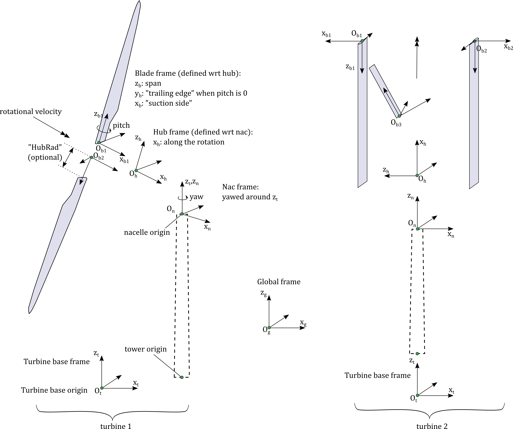
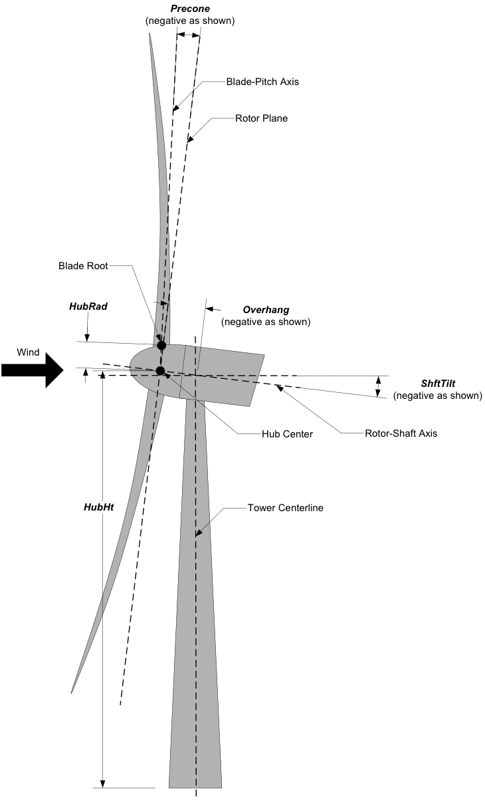

4.3.6. AeroDyn 드라이버
강체 운동(고정, 정현파 또는 임의)을 받는 강체 터빈의 공기역학적 시뮬레이션을 수행하기 위해 독립형 AeroDyn 드라이버가 제공됩니다. 독립 실행형 AeroDyn 드라이버 코드는 별도의 풍력터빈 로터 성능 도구인 WT_Perf에서 이전에 사용할 수 있었던 기능을 개선합니다. 이 드라이버는 현재 OpenFAST에서 지원하지 않는 터빈 구성도 지원합니다.
응용 프로그램의 예는 다음과 같습니다.
수평/수직 축 풍력터빈, 연, 쿼드 로터, 다중 로터 및 날개의 시뮬레이션.
풍속, 피치, 요, 로터 속도의 지정된 시계열을 사용한 시뮬레이션입니다.
결합된 사례 분석을 통해 다양한 작동 조건에서 터빈 응답을 평가합니다(예: 전력 계수 표면 계산(C)).P), 추력계수(CT) 및/또는 토크 계수(CQ)를 TSR(팁 속도 비율)과 블레이드 피치 각도의 함수로 표현합니다.
다양한 진폭과 주파수에서 타워 베이스의 진동 운동을 시뮬레이션합니다.
자세한 내용은 아래에 제공됩니다.
4.3.6.1. 드라이버 컴파일
AeroDyn 드라이버의 컴파일 단계는 OpenFAST의 컴파일 단계와 유사합니다(참조: 섹션 2). CMake 워크플로를 사용하면 드라이버가 실행될 때 자동으로 컴파일됩니다. 제조사. 드라이버만 컴파일하려면 다음을 사용하십시오. 는 aerodyn_driver를 만듭니다. 드라이버는 폴더에 있습니다 /빌드/모듈/에어로딘/. Windows용 Visual Studio 솔루션은 폴더에서 사용할 수 있습니다. /vs-build/AeroDyn.
4.3.6.2. 드라이버 입력 및 옵션
주요 개념
드라이버는 다음을 지원합니다.
두 종류의 터빈 정의: 기본(HAWT) 및 고급.
두 가지 종류의 유입 정의: 기본(균일 거듭제곱 법칙) 및 고급(InflowWind)
세 가지 유형의 분석(AnalysisType): 1) 하나 또는 여러 개의 터빈에 대한 단일 시뮬레이션, 2) 시간 종속 입력 하에서 하나의 풍력터빈에 대한 단일 시뮬레이션, 3) 하나의 풍력터빈의 결합 사례
현재 제한사항은 다음과 같습니다.
블레이드당 노드 수는 모든 블레이드와 모든 로터에 대해 동일해야 합니다.
터빈에는 하나의(선택적) 타워만 있습니다.
분석 유형 2 및 3은 터빈 1개로 제한됩니다.
입력 파일의 다양한 섹션에 대한 자세한 내용이 아래에 제공됩니다.
헤더 및 입력 구성
입력 파일은 헤더로 시작하며, 사용자는 두 번째 줄에 모델에 대한 관련 설명을 배치할 수 있습니다. 입력 구성 섹션은 다음과 같습니다. 사용자는 플래그를 전환할 수 있습니다. 에코 는 드라이버가 구문 분석한 입력 파일을 디스크에 다시 씁니다. 는 MHK 스위치를 사용하면 사용자는 터빈이 MHK 터빈인지 여부를 지정할 수 있습니다. MHK=0 는 MHK 터빈이 아님을 나타냅니다. MHK=1 는 고정식 MHK 터빈을 나타내며, MHK=2 는 플로팅 MHK 터빈을 나타냅니다. 드라이버는 세 가지 종류의 분석을 지원하지만 각 분석 유형에 모든 터빈 형식과 유입 유형을 사용할 수 있는 것은 아닙니다.
분석 유형=1: 기본(HAWT) 또는 임의 형상(HAWT/VAWT, 쿼드 로터 등)을 갖춘 하나 이상의 로터 시뮬레이션, 기본 또는 고급 바람 입력, 선택적으로 타워 베이스, 나셀 및 개별 피치 각도의 시변 모션. 타워 베이스의 임의 운동 또는 정현파 운동이 가능합니다.
분석 유형=2: 기본 시변 바람, 나셀 모션, 피치를 사용하여 하나의 터빈을 시뮬레이션합니다. 아래의 "시간 종속 분석"을 참조하세요.
분석 유형=3: 기본 정상풍을 갖춘 하나의 터빈에 대한 결합 사례 분석. 케이스 테이블은 드라이버에 의해 순차적으로 실행됩니다. 아래의 “결합 사례 분석”을 참조하세요.
섹션은 총 시뮬레이션 시간(티맥스) 및 시뮬레이션에 사용된 시간 단계(DT). 이러한 입력은 다음 용도로 사용됩니다. 분석 유형=1 및 분석 유형=2. 사용자는 변수를 통해 AeroDyn 기본 파일의 위치를 지정합니다. AeroFile. 경로는 AeroDyn 드라이버 파일에 대한 절대 경로이거나 상대 경로일 수 있습니다.
헤더 및 입력 구성의 예는 다음과 같습니다.
----- AeroDyn Driver Input File ---------------------------------------------------------
Three bladed wind turbine, using basic geometry input
----- Input Configuration -------------------------------------------------------
False Echo - Echo input parameters to "<rootname>.ech"?
0 MHK - MHK turbine type (switch) {0: not an MHK turbine, 1: fixed MHK turbine, 2: floating MHK turbine}
3 AnalysisType - {1: multiple turbines, one simulation, 2: one turbine, one time-dependent simulation, 3: one turbine, combined-cases}
11.0 TMax - Total run time [used only when AnalysisType/=3] (s)
0.5 DT - Simulation time step [used only when AnalysisType/=3] (s)
"AD.dat" AeroFile - Name of the primary AeroDyn input file
환경 조건
환경 조건은 여기에서 지정되고 AeroDyn에 전달됩니다. FldDens (동등 AeroDyn 기본 입력 파일의 AirDens )는 유체 밀도를 지정하며 0보다 큰 값이어야 합니다. 일반적인 값은 약 1.225kg/m입니다. 공기(풍력터빈) 및 1025kg/m용3 해수용(MHK 터빈)3 . KinVisc 는 유체의 동점도를 지정합니다(레이놀즈 수 계산에 사용됨). 일반적인 값은 약 1.460E-5m입니다. 공기(풍력터빈) 및 1.004E-6m의 경우2/s 해수용2/s(MHK 터빈). SpdSound 는 유체 내 소리의 속도입니다(비정상 익형 공기 역학 계산 내에서 마하 수를 계산하는 데 사용됨). 일반적인 값은 공기(풍력터빈)의 경우 약 340.3m/s이고 해수(MHK 터빈)의 경우 1500m/s입니다. 이 섹션의 다음 두 매개변수는 다음과 같은 경우에만 사용됩니다. CavitCheck = TRUE MHK 터빈용 . 패텀 는 자유 표면 위의 대기압입니다. 일반적으로 약 101,325 Pa입니다. Pvap 는 유체의 증기압입니다. 바닷물의 경우 이는 일반적으로 약 2,000Pa입니다. WtrDpth 는 해저부터 평균 해수면(MSL)까지의 수심입니다.
유입 데이터
유입은 두 가지 방법으로 제공될 수 있습니다.
기본(CompInflow=0): 멱법칙 전단이 있는 균일한 바람. 바람은 기준 높이(RefHt), 멱법칙 지수(PExp) 및 기준 높이에서의 풍속(HWindSpeed). 와 분석 유형=2, 기준 풍속 및 전력 법칙은 시계열로 별도로 정의됩니다("시간 종속 분석" 참조). 와 분석 유형=3, 이러한 매개변수는 별도의 표에 제공됩니다("결합 사례 분석" 참조). 참조 높이는 허브 높이와 다를 수 있으므로 모든 해석 유형에 사용됩니다. 특정 노드의 바람은 다음 방정식을 사용하여 결정됩니다. \(Z\) 는 육상 풍력터빈의 경우 지면 위, 해상 풍력터빈의 경우 평균 해수면(MSL) 위, 고정 및 부유식 MHK 터빈의 경우 해저 위 노드의 순간 고도입니다.
고급(CompInflow=1): InflowWind 모듈은 유입량을 계산하는 데 사용되며 InflowWind의 사용 가능한 모든 옵션을 사용할 수 있습니다. 사용자는 InflowWind 입력 파일의 (상대 또는 절대) 경로를 제공해야 합니다(InflowFile). 이 기능은 다음으로 제한됩니다. 분석 유형=1.
입력의 예는 다음과 같습니다.
----- Inflow Data ---------------------------------------------------------------
0 CompInflow - Compute inflow wind velocities (switch) {0=Steady Wind; 1=InflowWind}
"unused" InflowFile - Name of the InflowWind input file [used only when CompInflow=1]
9.0 HWindSpeed - Horizontal wind speed [used only when CompInflow=0 and AnalysisType=1] (m/s)
140 RefHt - Reference height for horizontal wind speed [used only when CompInflow=0] (m)
0.10 PLExp - Power law exponent [used only when CompInflow=0 and AnalysisType=1] (-)
SeaState 데이터
SeaState는 AeroDyn 드라이버에 의해 호출되어 유입 정보의 일부로 파도 필드를 정의할 수 있습니다. 파도와 해류가 있는 MHK 터빈의 경우 SeaState는 InflowWind를 쿼리하고 파도와 해류 필드의 속도와 가속도를 합산합니다. SeaState가 활성화되면 InflowWind도 활성화되어야 하지만 원하는 경우 전류를 0으로 설정할 수 있습니다. 이 섹션의 입력 예는 다음과 같습니다.
----- SeaState Data ---------------------------------------------------------------------
1 CompSeaSt - Compute wave velocities (switch) {0=No Waves; 1=SeaState}
"MHK_RM1_Floating_SeaState.dat" SeaStFile - Name of the SeaState input file [used only when CompSeaSt=1]
터빈 데이터
사용자는 다음과 같이 터빈 수를 지정합니다.
----- Turbine Data --------------------------------------------------------------
1 NumTurbines - Number of turbines (should be 1 for AnalysisType=2 or AnalysisType=3)
설명에 언급된 대로 터빈 수는 1이어야 합니다. 분석 유형=2 및 분석 유형=3. 이 섹션 이후에는 각 터빈의 형상과 모션이 제공됩니다. 각 터빈의 입력에는 접미사가 있어야 합니다. (i) 여기서 i 는 터빈 번호입니다( 터빈 수=1그러면 i=1). 각 터빈의 출력은 접미사를 사용하여 별도의 파일에 기록됩니다. .Ti 여기서 i 는 터빈 번호입니다(터빈 1개만 사용하는 경우 접미사는 추가되지 않음).
두 개의 풍력터빈을 사용한 구성의 예는 다음과 같습니다. 그림 4.7. 그림은 터빈 베이스 프레임(t), 나셀 프레임(n), 허브 프레임(h), 블레이드 프레임(b) 등 각 터빈과 연관된 다양한 프레임과 원점을 정의합니다. 표기법과 규칙은 터빈 프레임이 타워 베이스에서 시작되지 않는다는 점을 제외하면 OpenFAST 프레임을 따릅니다. 터빈의 규정된 동작은 터빈 원점에서 발생합니다. Yawing은 주변에서 발생합니다. \(z_n\) 축, 로터는 \(x_h\) 축 및 블레이드 피칭이 개인 주위에서 발생합니다. \(z_b\) 축. 다양한 프레임의 정의는 기본(HAWT) 입력 형식 정의를 사용할 때 표준화되고, 고급 입력 형식을 사용할 때 임의로 정의됩니다. 자세한 내용은 다음 단락에 설명되어 있습니다.


그림 4.7 다중 로터의 정의.
터빈 형상 정의
두 가지 터빈 입력 형식이 지원됩니다.
기본(BasicHAWTFormat=True): 기본 수평축 풍력터빈(HAWT) 형식입니다. 이 형식에서 터빈 형상은 전적으로 블레이드 수(NumBlades), 허브 반경(HubRad), 허브 높이(HubHt), 오버행(오버행), 샤프트 기울기(ShftTilt), 프리콘(프리콘), 타워 상단에서 로터 샤프트까지의 수직 거리(Twr2Shft), 그림과 같이 그림 4.8. 각 매개변수의 정의는 ElastoDyn 규칙을 따릅니다. 예를 들어, HubRad 는 블레이드 피치 축을 따라 회전 중심에서 블레이드 루트까지의 반경을 지정하며 0보다 커야 합니다. HubHt 는 해상 풍력 및 부유식 MHK 터빈의 경우 평균 해수면(MSL)을 기준으로, 고정 MHK 터빈의 경우 해저를 기준으로 육상 기반 풍력터빈의 경우 지상 위 허브 중심의 고도를 지정합니다. MSL 아래에 허브가 위치한 플로팅 MHK 터빈의 경우, HubHt 는 음수여야 합니다. 오버행 는 타워 중심선과 허브 중심 사이의(기울어질 수 있는) 로터 샤프트를 따라 거리를 지정하며 양의 풍하 방향입니다(상풍 로터의 경우 음수 사용). ShftTilt 는 로터 샤프트와 수평면 사이의 각도(도)이며 양수입니다. ShftTilt 는 샤프트의 풍하측 끝이 가장 높다는 것을 의미합니다(상향형 터빈은 음수 값을 갖습니다). 향상된 타워 클리어런스를 위한 ShftTilt ). 부유식 MHK 터빈의 경우 다음 기호가 표시됩니다. 동일한 샤프트 기울기를 얻으려면 ShftTilt 를 뒤집어야 합니다. 예를 들어, 부유식 역풍 MHK 터빈은 긍정적인 특성을 갖습니다. 향상된 타워 클리어런스를 위한 ShftTilt . 프리콘 는 편평한 로터 디스크와 블레이드에 의해 스윕되는 원뿔 사이의 각도(도)입니다. 양의 바람 방향(바람 방향 터빈은 음의 방향)입니다. 향상된 타워 클리어런스를 위한 프리콘 ). Twr2Shft 는 타워 상단에서 로터 샤프트까지의 수직 거리입니다. 타워 상단 아래에 로터가 있는 플로팅 MHK 터빈의 경우 이 값은 음수여야 합니다.

그림 4.8 기본 터빈 형상의 정의.
또한 사용자는 터빈 베이스의 원점을 다음 위치에 제공해야 합니다. t=0 (BaseOriginInit). 고정식 MHK 터빈의 경우, BaseOriginInit 는 해저를 기준으로 입력됩니다. 부유식 MHK 터빈의 경우, BaseOriginInit 는 MSL을 기준으로 입력되며, 터빈 베이스가 MSL 아래에 있는 경우 수직 성분은 음수입니다. 기본 입력의 예는 다음과 같습니다.

----- Turbine(1) Geometry -------------------------------------------------------
True BasicHAWTFormat(1) - Flag to switch between basic or generic input format {True: next 7 lines are basic inputs, False: Base/Twr/Nac/Hub/Bld geometry and motion must follow}
0,0,0 BaseOriginInit(1) - Coordinates of turbine base in global coordinates (m)
3 NumBlades(1) - Number of blades (-)
3. HubRad(1) - Hub radius (m)
140.82513 HubHt(1) - Hub height (m)
-7 Overhang(1) - Overhang (m)
-6 ShftTilt(1) - Shaft tilt (deg)
-4 Precone(1) - Blade precone (deg)
3.09343 Twr2Shft(1) - Vertical distance from the tower-top to the rotor shaft (m)
고급(BasicHAWTFormat=거짓): 타워 베이스, 나셀, 허브 및 개별 블레이드의 위치와 방향을 임의로 정의할 수 있습니다. 이는 HAWT 및 기타 터빈 개념에 사용될 수 있습니다. 다양한 프레임의 정의는 다음과 같습니다. 그림 4.7. 위치(BaseOriginInit) 및 방향(BaseOrientationInit)는 전역 프레임을 기준으로 정의됩니다. 수직 구성 요소 BaseOriginInit 는 고정식 MHK 터빈의 경우 해저를 기준으로 정의되고 부유식 MHK 터빈의 경우 MSL을 기준으로 정의됩니다. 방향은 세 개의 연속 회전 값(x-y-z 오일러 각도 시퀀스)을 사용하여 제공됩니다. 베이스가 모션을 겪는 경우 베이스 프레임의 방향은 시간에 따라 변하는 회전과 이러한 초기 회전으로 구성됩니다.
터빈에 타워가 있는지 여부를 나타내는 플래그가 다음 줄에 제공됩니다(HasTower). 이 플래그는 현재 VTK 출력에 영향을 미치며 아직 AeroDyn에는 영향을 미치지 않습니다. 사용자는 여전히 각 터빈에 대해 AeroDyn에 타워 입력 데이터를 제공해야 합니다(참조: 섹션 4.3.6.3). 다음 줄은 AeroDyn이 계산에 사용할 투영을 나타냅니다. 사용하는 것이 좋습니다 HAWT투영=참 HAWT용 는 AeroDyn에서 사용되는 기본 투영(원뿔 피치 축의 투영)입니다. 다른 로터 개념의 경우 다음을 설정하십시오. HAWT투영=거짓. 다음 줄은 타워, 나셀 및 허브의 위치와 방향을 나타냅니다.
타워와 나셀은 터빈 베이스(t) 원점과 프레임을 기준으로 정의됩니다. 타워 꼭대기는 나셀 원점과 일치하는 것으로 가정됩니다. AeroDyn 입력 파일에 정의된 타워 스테이션은 지상/MSL을 참조로 사용하는 OpenFAST와 달리 타워 원점을 기준으로 제공되는 것으로 가정됩니다. 섹션 4.3.6.3). 부유형 MHK 터빈의 경우, TwrOrigin_t 및 NacOrigin_t 는 타워 원점과 나셀 원점이 터빈 베이스 아래에 있는 경우 음수입니다. 허브는 나셀 원점과 프레임(n)을 기준으로 정의됩니다. 수직 구성 요소 HubOrigin_n 는 허브 원점이 나셀 원점 아래에 있는 경우(즉, 타워 상단) 플로팅 MHK 터빈에 대해 음수입니다.
블레이드의 정의는 블레이드 수로 시작하여 따릅니다. NumBlades. 블레이드가 없는 로터가 지원되며 격리된 타워를 모델링하는 데 사용할 수 있습니다. AeroDyn에서 타워 그림자/전위가 사용되는 경우 OLAF를 사용할 때 격리된 타워가 와류 후류의 흐름을 방해합니다. BEM을 사용하면 특정 터빈 블레이드의 흐름이 해당 터빈 타워에 의해서만 방해를 받습니다. 터빈 입력 i 및 블레이드 j 라벨이 붙어 있습니다 (i_j). 원산지 (BldOrigin_h) 및 방향(BldOrientation_h)는 허브 원점과 프레임(h)을 기준으로 지정됩니다. 허브 반경 입력(BldHubRad_Bl)는 편의를 위해 제공됩니다. 그들은 블레이드 원점을 따라 블레이드 원점을 효과적으로 상쇄합니다. \(z_b\) 축. 고급 형상 정의에 대한 입력 예는 다음과 같습니다. 이 예는 6도의 경사(OpenFAST에서 -6) 및 -4도의 프리콘(블레이드가 상류로 기울어짐)을 갖는 3 블레이드 역풍 HAWT의 일반적인 값에 해당합니다.
----- Turbine(1) Geometry -------------------------------------------------------
False BasicHAWTFormat(1) - Flag to switch between basic or generic input format {True: next 7 lines are basic inputs, False: Base/Twr/Nac/Hub/Bld geometry and motion must follow}
0,0,0 BaseOriginInit(1) - x,y,z coordinates of turbine base origin (m)
0,0,0 BaseOrientationInit(1) - successive rotations (theta_x, theta_y, theta_z) defining initial orientation of the base frame from the global frame (e.g. roll, tilt, yaw) (deg)
True HasTower(1) - True if turbine has a tower (flag)
True HAWTprojection(1) - True if turbine is a horizontal axis turbine (for AeroDyn projections) (flag)
0,0,0 TwrOrigin_t(1) - Coordinate of tower base in base coordinates [used only when HasTower is True] (m)
0,0,137 NacOrigin_t(1) - x,y,z coordinates of nacelle origin (and tower top) from base, in base coordinates (m)
-6.96,0.,3.82 HubOrigin_n(1) - x,y,z coordinates of hub origin from nacelle origin, in nacelle coordinates (m)
0,6,0 HubOrientation_n(1) - successive rotations (theta_x, theta_y, theta_z) defining initial orientation of the hub frame from the nacelle frame (e.g. roll, tilt, yaw). The x axis needs to be aligned with the rotational speed. (deg)
----- Turbine(1) Blades -----------------------------------------------------------------
3 NumBlades(1) - Number of blades for current rotor (-)
0,0,0 BldOrigin_h(1_1) - Origin of blade 1 wrt. hub origin in hub coordinates (m)
0,0,0 BldOrigin_h(1_2) - Origin of blade 2 wrt. hub origin in hub coordinates (m)
0,0,0 BldOrigin_h(1_3) - Origin of blade 3 wrt. hub origin in hub coordinates (m)
0 ,-4,0 BldOrientation_h(1_1) - successive rotations (theta_x, theta_y, theta_z) defining initial orientation of the blade frame from the hub frame such that the "z" is along span, "y" along trailing edge without pitch (azimuth, precone, pitch) (deg)
120,-4,0 BldOrientation_h(1_2) - successive rotations (theta_x, theta_y, theta_z) defining initial orientation of the blade frame from the hub frame such that the "z" is along span, "y" along trailing edge without pitch (azimuth, precone, pitch) (deg)
240,-4,0 BldOrientation_h(1_3) - successive rotations (theta_x, theta_y, theta_z) defining initial orientation of the blade frame from the hub frame such that the "z" is along span, "y" along trailing edge without pitch (azimuth, precone, pitch) (deg)
3.0 BldHubRad_bl(1_1) - z-offset in blade coordinates of blade 1 where radial input data start (m)
3.0 BldHubRad_bl(1_2) - z-offset in blade coordinates of blade 2 where radial input data start (m)
3.0 BldHubRad_bl(1_3) - z-offset in blade coordinates of blade 3 where radial input data start (m)
터빈 모션 정의
터빈 동작의 정의는 다음과 같은 경우에만 사용됩니다. 분석 유형=1, 그러나 항상 입력 파일에 있어야 합니다.
기본 형상이나 고급 형상에 대해서도 동일한 방식으로 베이스 모션이 제공됩니다. 베이스의 움직임은 다음과 같습니다. 고정(베이스모션유형=0), 정현파(베이스모션유형=1) 또는 임의(베이스모션유형=2). 터빈 베이스 모션은 터빈 베이스의 초기 위치와 방향을 적용하기 전에 각 시간 단계에서 적용됩니다. 정현파 운동은 1개의 자유도(DegreeOfFreedom)는 주어진 진폭(진폭) 및 주파수(주파수(Hz), 위상이 0입니다. 6가지 가능한 자유도는 전역 좌표(g)(예: 서지, 흔들림, 히브, 롤, 피치, 요)에서 기본 프레임의 변환 또는 회전에 해당합니다. 임의의 동작은 CSV 파일을 통해 지정됩니다(BaseMotionFileName)에는 시간, 3개의 변환(전역), 3개의 연속 회전(전역), 3개의 변환 속도, 3개의 회전 속도(오메가, 전역), 3개의 변환 가속도 및 3개의 회전 가속도(알파, 전역) 등 19개의 열이 포함되어 있습니다. 임의 입력 파일의 예는 다음과 같습니다. 섹션 4.3.6.4. 모션 파일의 시간 벡터는 오름차순이어야 하지만 선형일 필요는 없습니다. 드라이버는 선형 보간을 사용하여 주어진 시간에 입력을 결정합니다. 변위/방향, 속도 및 가속도는 일관성을 위해 내부적으로 확인되지 않습니다.
사인파 서지 모션에 대한 입력의 예는 다음과 같습니다.
----- Turbine(1) Motion [used only when AnalysisType=1] --------------------------
1 BaseMotionType(1) - Type of motion prescribed for this base {0: fixed, 1: Sinusoidal motion, 2: arbitrary motion} (flag)
1 DegreeOfFreedom(1) - {1:xg, 2:yg, 3:zg, 4:theta_xg, 5:theta_yg, 6:theta_zg} [used only when BaseMotionType=1] (flag)
5.0 Amplitude(1) - Amplitude of sinusoidal motion [used only when BaseMotionType=1] (m or rad)
0.1 Frequency(1) - Frequency of sinusoidal motion [used only when BaseMotionType=1] (Hz)
"unused" BaseMotionFileName(1) - Filename containing arbitrary base motion (19 columns: Time, x, y, z, theta_x, ..., alpha_z) [used only when BaseMotionType=2]
기본 및 고급 형상에 대한 다양한 입력은 다음과 같습니다.
기본: 기본 터빈의 모션은 일정한 나셀 요(NacYaw, 수직 타워 축을 기준으로 나셀의 양의 회전(아래를 볼 때 시계 반대 방향), 로터 속도(RotSpeed, 바람이 불어오는 쪽을 바라보며 양의 시계 방향) 및 블레이드 피치(BldPitch, 주변에 음수 \(z_b\)). 부유식 MHK 터빈의 경우, NacYaw 는 동일한 전체 요 방향(즉, 아래쪽을 볼 때 시계 방향으로 수직 타워 축을 중심으로 나셀이 양의 회전)을 달성하도록 뒤집어야 합니다. 예는 다음과 같습니다.
0 NacYaw(1) - Yaw angle (about z_t) of the nacelle (deg)
7 RotSpeed(1) - Rotational speed of rotor in rotor coordinates (rpm)
1 BldPitch(1) - Blades pitch (deg)
고급: 고급 형상이 제공되고 블레이드 수가 0이 아닌 경우 모션 섹션에는 나셀 모션, 로터 모션 및 개별 블레이드 피치 모션에 대한 옵션이 포함됩니다. 이러한 각 동작의 구문은 유형(고정 또는 시변) 정의, 고정 사례에 대한 값 또는 시변 사례에 대한 파일로 구성됩니다. 입력 파일은 시간, 위치, 속도, 가속도가 포함된 CSV 파일입니다. 파일의 예는 다음과 같습니다. 섹션 4.3.6.4. 변위/방향, 속도 및 가속도는 일관성을 위해 내부적으로 확인되지 않습니다. 모션 파일의 시간 벡터는 오름차순이어야 하지만 선형일 필요는 없습니다. 드라이버는 선형 보간을 사용하여 주어진 시간에 입력을 결정합니다. CSV 파일의 각도 및 회전 데이터는 rad 및 rad/s로 정의되는 반면, 드라이버 입력 파일에서는 deg 및 rpm으로 정의됩니다. 고정된 회전 속도에 대한 예가 아래에 나와 있습니다.
0 NacMotionType(1) - Type of motion prescribed for the nacelle {0: fixed yaw, 1: time varying yaw angle} (flag)
0 NacYaw(1) - Yaw angle (about z_t) of the nacelle [user only when NacMotionType=0] (deg)
"unused" NacMotionFileName(1) - Filename containing yaw motion [used only when NacMotionType=1]
0 RotMotionType(1) - Type of motion prescribed for this rotor {0: constant rotation, 1: time varying rotation} (flag)
6.0 RotSpeed(1) - Rotational speed of rotor in rotor coordinates [used only when RotorMotionType=0] (rpm)
"unused" RotMotionFileName(1) - Filename containing rotor motion [used only when RotorMotionType=1]
0 BldMotionType(1) - Type of pitch motion prescribed for the blades {0: fixed, 1: time varying pitch} (flag)
0 BldPitch(1_1) - Blade 1 pitch [used only when BldMotionType=0] (deg)
0 BldPitch(1_2) - Blade 2 pitch [used only when BldMotionType=0] (deg)
0 BldPitch(1_3) - Blade 3 pitch [used only when BldMotionType=0] (deg)
"unused" BldMotionFileName(1_1) - Filename containing blade pitch motion [used only when BldMotionType=1]
"unused" BldMotionFileName(1_2) - Filename containing blade pitch motion [used only when BldMotionType=1]
"unused" BldMotionFileName(1_3) - Filename containing blade pitch motion [used only when BldMotionType=1]
시간 종속 분석
시간 종속 분석은 시뮬레이션 중에 몇 가지 표준 변수를 변경하는 데 사용됩니다. 변수는 다음과 같습니다. 기준 풍속(HWndSpeed), 멱법칙 지수(PExp), 로터 속도(RotSpd), 집단 피치(피치) 및 나셀 요(요). 각 변수의 시계열은 CSV 파일(TimeAnalysisFileName). 시간 의존적 분석은 다음을 사용하여 선택됩니다. 분석 유형=2. 하나의 터빈으로 제한됩니다(수터빈=1).
----- Time-dependent Analysis [used only when AnalysisType=2 and numTurbines=1] ------
"TimeSeries.csv" TimeAnalysisFileName - Filename containing time series (6 column: Time, HWndSpeed, PLExp, RotSpd, Pitch, Yaw).
결합 사례 분석
결합 사례 분석은 한 번의 실행으로 파라메트릭 연구를 실행하는 데 사용됩니다. 그들은 다음을 사용하여 선택됩니다. 분석 유형=3, 하나의 터빈으로 제한됩니다(수터빈=1). 각 시뮬레이션에 대해 변경할 수 있는 변수는 다음과 같습니다. 기준 풍속(HWndSpeed), 멱법칙 지수(PExp), 로터 속도(RotSpd), 집단 피치(피치), 나셀 요(요), 시간 단계(dT), 시뮬레이션 시간(티맥스) 및 정현파 모션 매개변수(자유도, DOF, 진폭 및 주파수). 언제 DOF=0, 터빈 베이스가 고정되어 있습니다.
----- Combined-Case Analysis [used only when AnalysisType=3 and numTubines=1] ------
4 NumCases - Number of cases to run
HWndSpeed PLExp RotSpd Pitch Yaw dT Tmax DOF Amplitude Frequency
(m/s) (-) (rpm) (deg) (deg) (s) (s) (-) (m or rad) (Hz)
8. 0.0 6. 0. 0. 1.0 100 0 0 0.0
8. 0.0 6. 0. 0. 1.0 100 0 0 0.0
9. 0.1 7. 1. 0. 0.5 50 1 5.0 0.1
9. 0.2 8. 2. 0. 0.5 50 1 2.0 0.2
출력
출력 섹션은 OpenFAST 출력과 유사하게 표 형식 출력 파일 및 VTK 파일의 형식을 제어합니다. 사용자는 VTK 시각화를 위해 허브 반경과 나셀 치수를 제어할 수 있습니다. 허브는 반경(VTKHubRad), 원점과 나셀 좌표에 평행한 세 개의 길이를 사용하여 정의된 평행육면체를 갖춘 나셀(VTKNacDim).
----- Output Settings -------------------------------------------------------------------
"ES15.8E2" OutFmt - Format used for text tabular output, excluding the time channel. Resulting field should be 10 characters. (quoted string)
2 OutFileFmt - Format for tabular (time-marching) output file (switch) {1: text file [<RootName>.out], 2: binary file [<RootName>.outb], 3: both}
0 WrVTK - VTK visualization data output: (switch) {0=none; 1=init; 2=animation}
2 VTKHubRad - HubRadius for VTK visualization (m)
-1,-1,-1,2,2,2 VTKNacDim - Nacelle Dimension for VTK visualization x0,y0,z0,Lx,Ly,Lz (m)
4.3.6.3. AeroDyn 입력
하나의 터빈을 사용할 때 AeroDyn 입력 파일을 변경할 필요가 없습니다. 다중 터빈 구현의 영향을 최소화하기 위해 드라이버는 현재 모든 터빈에 대해 하나의 AeroDyn 입력 파일만 사용합니다. 이는 AeroDyn 옵션이 현재 모든 로터에 대해 동일하다는 것을 의미합니다.
블레이드 파일과 타워, 허브 및 나셀 입력의 정의는 3개 이상의 블레이드가 사용되고 2개 이상의 터빈이 사용되는 경우 조정되어야 합니다.
블레이드 파일
레거시 AeroDyn 형식에는 최소 3개의 블레이드 파일 이름이 필요합니다. 이러한 이유로 현재 모든 로터의 블레이드는 연속적으로 표시됩니다. ADBlFile 목록. 목록은 터빈과 터빈 블레이드에 대한 루프를 통해 채워지며, 블레이드 인덱스가 가장 빠른 인덱스입니다. 현재로서는 모든 블레이드에 대해 스테이션 수가 동일해야 합니다.
두 개의 터빈에 대한 예가 아래에 나와 있습니다. 첫 번째 터빈에는 3개의 블레이드가 있고 두 번째 터빈에는 2개의 블레이드가 있습니다.
====== Rotor/Blade Properties =====================================================================
True UseBlCm - Include aerodynamic pitching moment in calculations? (flag)
"AD_Turbine1_blade1.dat" ADBlFile(1) - Name of file containing distributed aerodynamic properties for Blade #1 (-)
"AD_Turbine1_blade1.dat" ADBlFile(2) - Name of file containing distributed aerodynamic properties for Blade #2 (-)
"AD_Turbine1_blade3.dat" ADBlFile(3) - Name of file containing distributed aerodynamic properties for Blade #3 (-)
"AD_Turbine2_blade1.dat" ADBlFile(4) - Name of file containing distributed aerodynamic properties for Blade #4 (-)
"AD_Turbine2_blade2.dat" ADBlFile(5) - Name of file containing distributed aerodynamic properties for Blade #5 (-)
허브 및 나셀 입력
허브 및 나셀 매개변수를 정의하는 섹션도 각 터빈에 대해 재현되어야 합니다.
아래에는 두 개의 터빈에 대한 예가 나와 있습니다.
====== Hub Properties ============================================================================== [used only when MHK=1 or 2]
7.0 VolHub - Hub volume (m^3)
0.0 HubCenBx - Hub center of buoyancy x direction offset (m)
====== Hub Properties ============================================================================== [used only when MHK=1 or 2]
5.0 VolHub - Hub volume (m^3)
0.2 HubCenBx - Hub center of buoyancy x direction offset (m)
====== Nacelle Properties ========================================================================== [used only when MHK=1 or 2 or when NacelleDrag=True]
32.0 VolNac - Nacelle volume (m^3)
0.3, 0.0, 0.05 NacCenB - Position of nacelle center of buoyancy from yaw bearing in nacelle coordinates (m)
4.67, 20.15, 20.15 NacArea - Projected area of the nacelle in X, Y, Z in the nacelle coordinate system (m^2)
0.5, 0.5, 0.5 NacCd - Drag coefficient for the nacelle areas defined above (-)
0.43, 0, 0 NacDragAC - Position of aerodynamic center of nacelle drag in nacelle coordinates (m)
====== Nacelle Properties ========================================================================== [used only when MHK=1 or 2 or when NacelleDrag=True]
32.0 VolNac - Nacelle volume (m^3)
0.3, 0.0, 0.05 NacCenB - Position of nacelle center of buoyancy from yaw bearing in nacelle coordinates (m)
4.67, 20.15, 20.15 NacArea - Projected area of the nacelle in X, Y, Z in the nacelle coordinate system (m^2)
0.5, 0.5, 0.5 NacCd - Drag coefficient for the nacelle areas defined above (-)
0.43, 0, 0 NacDragAC - Position of aerodynamic center of nacelle drag in nacelle coordinates (m)
공기역학적 타워 입력
AeroDyn의 전체 타워 입력 섹션은 타워가 없도록 설정된 터빈을 포함하여 각 터빈에 대해 재현되어야 합니다(hasTower=거짓). 스테이션 수는 터빈마다 다를 수 있습니다. AeroDyn 입력 파일에 정의된 타워 스테이션은 지상/MSL을 기준으로 사용하는 OpenFAST와 달리 타워 원점을 기준으로 제공되는 것으로 가정됩니다.
아래에는 두 개의 터빈에 대한 예가 나와 있습니다.
====== Turbine(1) Tower Influence and Aerodynamics ================================================ [used only when TwrPotent/=0, TwrShadow/=0, TwrAero=True, or MHK=1 or 2]
2 NumTwrNds - Number of tower nodes used in the analysis (-) [used only when TwrPotent/=0, TwrShadow/=0, TwrAero=True, or MHK=1 or 2]
TwrElev TwrDiam TwrCd TwrTI TwrCb
(m) (m) (-) (-) (-)
0.0 2.0 1.0 0.1 0.0
10.0 1.0 1.0 0.1 0.0
====== Turbine(2) Tower Influence and Aerodynamics ================================================ [used only when TwrPotent/=0, TwrShadow/=0, TwrAero=True, or MHK=1 or 2]
3 NumTwrNds - Number of tower nodes used in the analysis (-) [used only when TwrPotent/=0, TwrShadow/=0, TwrAero=True, or MHK=1 or 2]
TwrElev TwrDiam TwrCd TwrTI TwrCb
(m) (m) (-) (-) (-)
0.0 4.0 1.0 0.1 0.0
15.0 3.0 1.0 0.1 0.0
30.0 2.0 1.0 0.1 0.0
4.3.6.4. 드라이버 입력 파일의 예
드라이버의 다양한 기능을 사용하는 작업 예제는 r-test 저장소에 제공됩니다.
4.3.6.4.1. 메인 드라이버 입력 파일
기본 유입, 기본 HAWT 및 결합 사례 분석을 위한 AeroDyn 드라이버의 예는 다음과 같습니다.
----- AeroDyn Driver Input File ---------------------------------------------------------
Three bladed wind turbine, using basic geometry input
----- Input Configuration ---------------------------------------------------------------
False Echo - Echo input parameters to "<rootname>.ech"?
0 MHK - MHK turbine type (switch) {0: not an MHK turbine, 1: fixed MHK turbine, 2: floating MHK turbine}
3 AnalysisType - {1: multiple turbines, one simulation, 2: one turbine, one time-dependent simulation, 3: one turbine, combined cases}
11.0 TMax - Total run time [used only when AnalysisType/=3] (s)
0.5 DT - Simulation time step [used only when AnalysisType/=3] (s)
"./AD.dat" AeroFile - Name of the primary AeroDyn input file
----- Environmental Conditions ----------------------------------------------------------
1.225000000000000e+00 FldDens - Density of working fluid (kg/m^3)
1.477551020408163e-05 KinVisc - Kinematic viscosity of working fluid (m^2/s)
3.350000000000000e+02 SpdSound - Speed of sound in working fluid (m/s)
1.035000000000000e+05 Patm - Atmospheric pressure (Pa) [used only for an MHK turbine cavitation check]
1.700000000000000e+03 Pvap - Vapour pressure of working fluid (Pa) [used only for an MHK turbine cavitation check]
0 WtrDpth - Water depth (m)
----- Inflow Data -----------------------------------------------------------------------
0 CompInflow - Compute inflow wind velocities (switch) {0=Steady Wind; 1=InflowWind}
"unused" InflowFile - Name of the InflowWind input file [used only when CompInflow=1]
9.0 HWindSpeed - Horizontal wind speed [used only when CompInflow=0 and AnalysisType=1] (m/s)
140 RefHt - Reference height for horizontal wind speed [used only when CompInflow=0] (m)
0.10 PLExp - Power law exponent [used only when CompInflow=0 and AnalysisType=1] (-)
----- SeaState Data ---------------------------------------------------------------------
0 CompSeaSt - Compute wave velocities (switch) {0=No Waves; 1=SeaState}
"unused" SeaStFile - Name of the SeaState input file [used only when CompSeaSt=1]
----- Turbine Data ----------------------------------------------------------------------
1 NumTurbines - Number of turbines
----- Turbine(1) Geometry ---------------------------------------------------------------
True BasicHAWTFormat(1) - Flag to switch between basic or generic input format {True: next 7 lines are basic inputs, False: Base/Twr/Nac/Hub/Bld geometry and motion must follow}
0,0,0 BaseOriginInit(1) - Coordinate of tower base in base coordinates (m)
3 NumBlades(1) - Number of blades (-)
3. HubRad(1) - Hub radius (m)
140.82513 HubHt(1) - Hub height (m)
-7 Overhang(1) - Overhang (m)
-6 ShftTilt(1) - Shaft tilt (deg)
-4 Precone(1) - Blade precone (deg)
3.09343 Twr2Shft(1) - Vertical distance from the tower-top to the rotor shaft (m)
----- Turbine(1) Motion [used only when AnalysisType=1] ---------------------------------
1 BaseMotionType(1) - Type of motion prescribed for this base {0: fixed, 1: Sinusoidal motion, 2: arbitrary motion} (flag)
1 DegreeOfFreedom(1) - {1:xg, 2:yg, 3:zg, 4:theta_xg, 5:theta_yg, 6:theta_zg} [used only when BaseMotionType=1] (flag)
5.0 Amplitude(1) - Amplitude of sinusoidal motion [used only when BaseMotionType=1] (m or rad)
0.1 Frequency(1) - Frequency of sinusoidal motion [used only when BaseMotionType=1] (Hz)
"" BaseMotionFileName(1) - Filename containing arbitrary base motion (19 columns: Time, x, y, z, theta_x, ..., alpha_z) [used only when BaseMotionType=2]
0 NacYaw(1) - Yaw angle (about z_t) of the nacelle (deg)
7 RotSpeed(1) - Rotational speed of rotor in rotor coordinates (rpm)
1 BldPitch(1) - Blade 1 pitch (deg)
----- Time-dependent Analysis [used only when AnalysisType=2, numTurbines=1] ------------
"unused" TimeAnalysisFileName - Filename containing time series (6 column: Time, HWndSpeed, PLExp, RotSpd, Pitch, Yaw).
----- Combined-Case Analysis [used only when AnalysisType=3, numTurbines=1 -------------
4 NumCases - Number of cases to run
HWndSpeed PLExp RotSpd Pitch Yaw dT Tmax DOF Amplitude Frequency
(m/s) (-) (rpm) (deg) (deg) (s) (s) (-) (-) (Hz)
8.0 0.0 6. 0. 0. 1.0 100 0 0 0
8.0 0.0 6. 0. 0. 1.0 100 0 0 0
9.0 0.1 7. 1. 0. 0.5 51 1 5.0 0.1
9.0 0.2 8. 2. 0. 0.51 52 1 2.0 0.2
----- Output Settings -------------------------------------------------------------------
"ES15.8E2" OutFmt - Format used for text tabular output, excluding the time channel. Resulting field should be 10 characters. (quoted string)
2 OutFileFmt - Format for tabular (time-marching) output file (switch) {1: text file [<RootName>.out], 2: binary file [<RootName>.outb], 3: both}
0 WrVTK - VTK visualization data output: (switch) {0=none; 1=init; 2=animation}
2 VTKHubRad - HubRadius for VTK visualization (m)
-1,-1,-1,2,2,2 VTKNacDim - Nacelle Dimension for VTK visualization x0,y0,z0,Lx,Ly,Lz (m)
4.3.6.4.2. 모션 입력 파일
모션 파일의 시간 벡터는 오름차순이어야 하지만 선형일 필요는 없습니다. 드라이버는 선형 보간을 사용하여 주어진 시간에 입력을 결정합니다.
임의 기본 모션 파일:
time_[s] , x_[m] , y_[m] , z_[m] , theta_x_[rad] , theta_y_[rad] , theta_z_[rad] , xdot_[m/s] , ydot_[m/s] , zdot_[m/s] , omega_x_g_[rad/s] , omega_y_g_[rad/s] , omega_z_g_[rad/s] , xddot_[m^2/s] , yddot_[m^2/s] , zddot_[m^2/s] , alpha_x_g_[rad/s] , alpha_y_g_[rad/s] , alpha_z_g_[rad/s]
0.000000 , 0.000000 , 0.000000 , 0.000000 , 0.000000 , 0.000000 , 0.000000 , 0.000000 , 0.000000 , 10.053096 , 0.000000 , 0.000000 , 0.000000 , 0.000000 , 0.000000 , -0.000000 , 0.000000 , 0.000000 , 0.000000
0.100000 , 0.000000 , 0.000000 , 0.963507 , 0.000000 , 0.000000 , 0.000000 , 0.000000 , 0.000000 , 8.809596 , 0.000000 , 0.000000 , 0.000000 , 0.000000 , 0.000000 , -24.344157 , 0.000000 , 0.000000 , 0.000000
요 모션 파일:
time_[s] , yaw_[rad] , yaw_rate_[rad/s] , yaw_acc_[rad/s^2]
0.000000 , 0.000000 , 0.000000 , 0.000000
0.100000 , 0.007277 , 0.212647 , 4.029093
로터 모션 파일:
time_[s] , azimuth_[rad] , omega_[rad/s] , rotacc_[rad/s^2]
0.000000 , 0.000000 , 0.000000 , 0.000000
0.100000 , 0.000000 , 0.000000 , 0.000000
피치 모션 파일:
time_[s] , pitch_[rad] , pitch_rate_[rad/s] , pitch_acc_[rad/s^2]
0.000000 , 0.000000 , 0.000000 , 0.000000
0.100000 , 0.000000 , 0.000000 , 0.000000
0.200000 , 0.000000 , 0.000000 , 0.000000